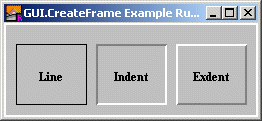

GUI.CreateFrame (x1, y1, x2, y2, kind : int) : int
Creates a frame and returns the frame's widget ID.
A frame is a box drawn around other GUI widgets to make the window look better and help organize the GUI elements.

Three Types of Frames With a Label in Each Frame
Frames are the only GUI widgets that can have other widgets placed within them. Frames are passive widgets, meaning that they do not respond to button clicks or keystrokes.
The x1 and y1 parameters specify the lower-left corner of the frame and the x2 and y2 parameters specify the upper-right corner of the frame. The kind parameter specifies the type of frame. This is one of 0, GUI.LINE, GUI.INDENT, or GUI.EXDENT. A kind of 0 is the default and is the same as GUI.LINE.
GUI.INDENT and GUI.EXDENT only display properly if the background colour has been set to gray using GUI.SetBackgroundColor. GUI.INDENT makes the contents frame appear indented or recessed. GUI.EXDENT makes the contents of the frame appear to stand out from the window.
The following program draws three frames in the window and draws a label in each one.
import GUI
View.Set ("graphics:250;90,nobuttonbar")
GUI.SetBackgroundColor (gray)
var lineFrame, indentFrame, exdentFrame : int
var lineLabel, indentLabel, exdentLabel : int
lineFrame := GUI.CreateFrame (10, 10, 80, 70, 0)
indentFrame := GUI.CreateFrame (90, 10, 160, 70, GUI.INDENT)
exdentFrame := GUI.CreateFrame (170, 10, 240, 70, GUI.EXDENT)
% Label the lines.
lineLabel := GUI.CreateLabelFull (10, 10, "Line", 70, 60,
GUI.CENTER + GUI.MIDDLE, 0)
indentLabel := GUI.CreateLabelFull (90, 10, "Indent", 70, 60,
GUI.CENTER + GUI.MIDDLE, 0)
exdentLabel := GUI.CreateLabelFull (170, 10, "Exdent", 70, 60,
GUI.CENTER + GUI.MIDDLE, 0)
When GUI.CreateFrame is called, the newly created frame will be displayed immediately unless GUI.DisplayWhenCreated has been called with the display parameter set to false.
A frame widget is a passive widget and cannot be enabled or disabled.
The following GUI subprograms can be called with a frame as the widgetID parameter:
GUI.Show, GUI.Hide, GUI.Dispose, GUI.GetX, GUI.GetY, GUI.GetWidth,GUI.GetHeight, GUI.SetPosition, GUI.SetSize, GUI.SetPositionAndSize
Exported qualified.
This means that you can only call the function by calling GUI.CreateFrame, not by calling CreateFrame.